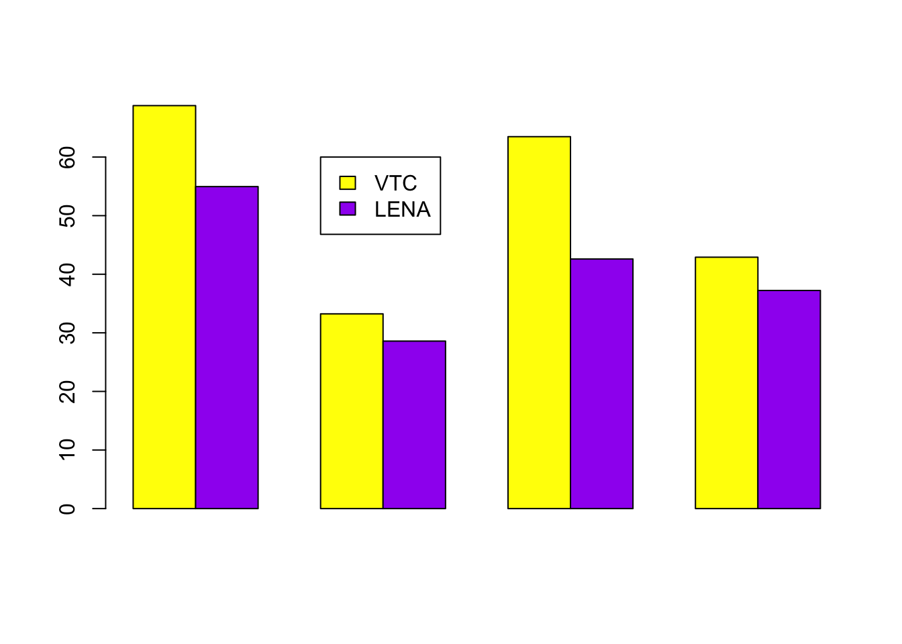
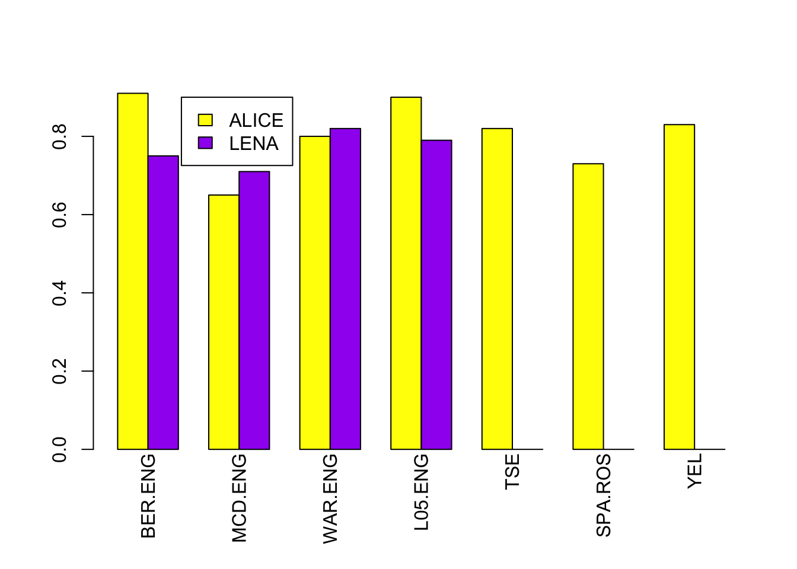

Chapter 14 Accuracy of automated analyses
In this video, we are going to discuss accuracy of automated analyses.
14.1 LENA Software
The LENA Foundation has made an important effort to document the accuracy of different aspects of their software. However, I admit I am more convinced by data produced by other researchers, who have a smaller conflict of interest: Even if researchers in the LENA Foundation have every good intention, it will be very hard for them to not prefer to see good results over poorer results. Additionally, I disagree with some analysis decisions they made in their initial accuracy reports: Most saliently, they only discuss confusion between children and adults, and thus do not report errors due to missed speech (i.e., low recall) nor confusion between the key child and other children, and across sexes among adults. For some research purposes and populations, the accuracy of other child and male adult categories are particularly important.
In my view, at present, the most convincing evidence on LENA performance comes from a comparative analysis we did on a corpus that contained mostly North American children:
| Precision | Recall | Fscore | |
|---|---|---|---|
| CHI | 60.91 | 50.07 | 54.96 |
| OCH | 27.34 | 29.97 | 28.59 |
| FEM | 63.87 | 31.96 | 42.60 |
| MAL | 43.57 | 32.50 | 37.23 |
As you can see, the precision is relatively high for the key child and female adult, lower for male adult, and really very low for other children, with just one quarter of sections attributed to other child truly being classified as such by human annotators. As for recall, LENA tends to miss a lot of speech, less so for the key child, but for all others, two thirds of speech found by human annotators was missed by LENA.
As explained in the previous section, some research purposes do not depend so much on perfect precision or recall, but rather in the extent to which differences across clips or across children are reflected. In these cases, one can look at correlations between e.g. child vocalization counts according to LENA versus humans. The data on such correlations is much more encouraging: A systematic review found that child vocalization counts for LENA versus humans correlated above .7 for many samples (including non-English speakers), with similarly good results for adult word counts. Results for conversational turns were much worse however, and work published since has raised concerns about this measure.
14.2 ACLEW tools
14.2.1 Voice type classifier
First let’s start with the voice type classifier. We checked performance in a few ways.
Let me start with results in a completely held out set: the algorithm had never seen data from those corpora. We used data from the English portion of ACLEW, which matches the language on which LENA was trained – but not our Voice Type Classifier, which was trained with multiple languages. The fact that LENA got to see more data in this language could lead LENA to have better performance than the Voice Type Classifier.
| Precision | Recall | Fscore | |
|---|---|---|---|
| CHI | 62.37 | 76.67 | 68.78 |
| OCH | 46.77 | 25.78 | 33.24 |
| FEM | 70.30 | 57.87 | 63.48 |
| MAL | 39.52 | 46.92 | 42.91 |
Here is the performance for each talker type – in machine-learning terms, we call these “classes”. KCHI is the class corresponding to the key child, chi that corresponding to other children, fem to adult females, mal to adult males. You can ignore speech (a class that is activated whenever anyone talks), and AVE (the average).
The first two columns show precision and recall. Precision means: when the algorithm said that something was a given talker what proportion of the time it actually was that talker? Recall means: what proportion of sounds or segments that were originally described as being a given speaker by human annotators were actually classified into that class by the algorithm?
You can combine both of these types of information together into a measure that’s called f-score – shown here in the last column. In all three measures, higher is better. For recall, higher performance means that the algorithm successfully identified more of that class. For precision, higher precision means that more of the audio identified as a given class truly WAS that class. And finally, higher F-score can be obtained either because the algorithm found more of what it was looking for (so higher recall) and/or because it was more accurate (higher precision).
You can see here that in this test set (only English learning infants, recorded with a LENA device) we find pretty good scores for the key child and female adult, lower for male adult, and lower for other children.
How does the LENA software fare on the same data? Here is the F-score in a bar plot, so it’s easier to compare them side by side.

We find better fscores for the voice type classifier than in LENA for all the classes. The increase in performance is particularly salient for key child and female adult, which also tend to be the most common classes. This is great news because it means overall better performance.
That is the performance in a completely held out set, which is great because the algorithm had never seen data from those corpora and it allowed us to benchmark against LENA. But you may be interested in how good performance is across languages. For this, we are going to show you results from our “test set” – this is a set of data that was drawn from the same corpora as the training set. But note that the test set is “new”, since we didn’t use it for training. That said, generalization here is smaller in terms of the fact that these data come from the same corpora that were used for training. One advantage of this evaluation is that it covers more languages – remember that the corpora we used included English, French, a Chinese language, and many more. Moreover, the data were collected with a wide array of recording devices: LENA devices weren’t even the majority of the data. In this case, we see here that performance is also quite good for KCHI (the key child) and FEM (female adult), lower for MAL (male adults), and relatively low for other children (CHI).
| Precision | Recall | Fscore | |
|---|---|---|---|
| CHI | 81.69 | 73.48 | 77.37 |
| OCH | 18.78 | 40.45 | 25.65 |
| FEM | 77.94 | 87.40 | 82.40 |
| MAL | 37.82 | 47.86 | 42.25 |
However, please note that, as in the LENA case, performance for male speech and other children’s speech is not very good – so if you are interested in those classes, there is currently no algorithm that is perfect for them. That said, one of the goals of the exelang project is to improve performance on those classes so – stay tuned!
14.2.2 ALICE
Let us now discuss performance of our word counting open source alternative, ALICE.

In this chart we’re showing you the evaluation for ALICE: the y axis shows correlations between the word count estimation according to an algorithm and the human – higher is better because it means the two agree more. Each one of the bars shows a different estimation, using different algorithms. We are going to focus only on two of these bars:
The bars for ALICE’s word count estimation are yellow whereas those for LENA are purple. We didn’t have LENA performance for all of the corpora because some of them were gathered with an olympus device, and as explained in the hardware video, you cannot annotate data with LENA unless you use a LENA device. In this evaluation, we only looked at languages that were represented in the training set, and also we retrained each language separately. The corpora used contained mostly English, with some Spanish, Tseltal, and a little bit of French. In terms of recording devices, it was mostly LENA, with some data collected using olympus and other similar devices. Notice that in general performance is quite good, and certainly comparable to LENA: it’s much better than LENA in two cases (the bergelson corpus, which is English-spoken and the LUCID 0-5 corpus, which is also English spoken), LENA is quite a bit better in one case (the McDivitt corpus, which is mainly English spoken) and just a little better in the last case having results for both (the Warlaumont corpus, mostly English). As for differences across languages and devices, it does not appear to be the case that the bars are always higher (ie correlations are always better) for English spoken corpora collected using LENA (BER, MCD, WAR, L05) than for corpora collected in other languages and with non-LENA devices (Tseltal, the Rosemberg corpus of Argentinean Spanish, and Yélî Dnye).
Members of the ACLEW project also developed software to classify adult speech into child- versus adult-directed, but we feel performance of that algorithm is still not good enough to make a public release. We also developed a system for classifying the key child’s sections into different vocalization types (crying, canonical, and non-canonical). This software is open source and available via a virtual machine, which we found in the past is a little hard to install and use. So for these two things, please stay tuned – there will be developments in the future!
14.3 Resources
- LENA reliability original report
- Räsänen, O., Seshadri, S., Lavechin, M., Cristia, A., & Casillas, M. (2020). ALICE: An open-source tool for automatic measurement of phoneme, syllable, and word counts from child-centered daylong recordings. Behavior Research Methods. pdf code
- Lavechin, M., Bousbib, R., Bredin, H., Dupoux, E., & Cristia, A. (2020). An open-source voice type classifier for child-centered daylong recordings. Interspeech. pdf code